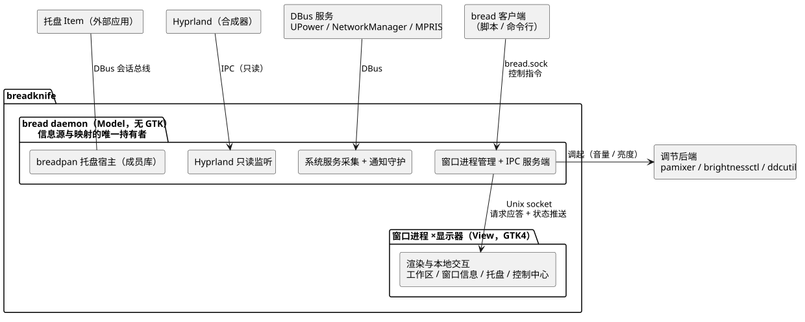
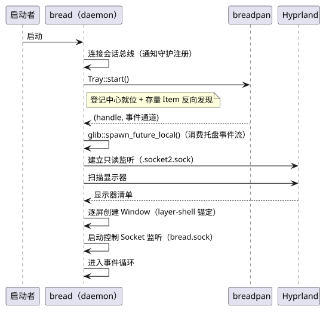
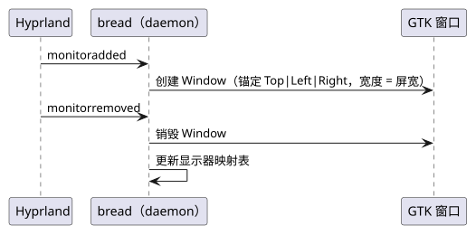
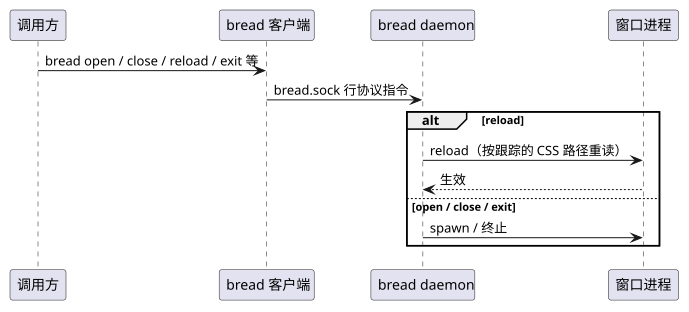
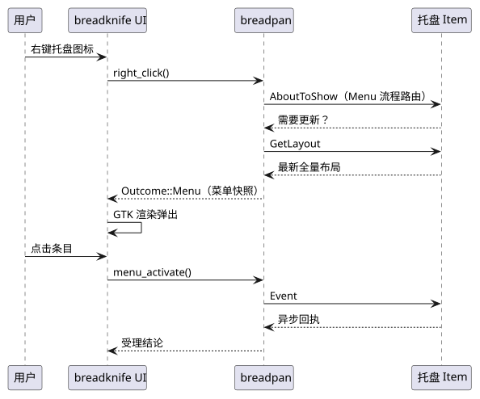
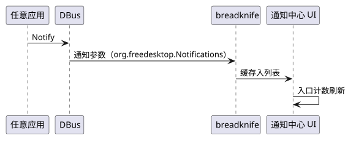

breadknife 架构规格
本文档面向使用方（用户与二次开发者）：总体架构、技术栈与运行模型、时序图、样式系统、接口契约与数据模型。 能力级边界以 README.html 为权威，实现骨架见 CODE.html。
1. 术语
- 托盘域术语（Watcher、Item、渲染直出等）沿用成员库定义，见 breadpan/ARCHITECTURE.html §1，本文档不重复定义。
2. 通用约定
- 分层：bread daemon＝Model（无 GTK；信息源与全部映射的唯一持有者）；窗口进程＝View（GTK；只渲染与本地交互）。
- 操作执行原则：有副作用（有状态）的操作必走 daemon；不影响 daemon 追踪状态的操作允许（不强制）直通。
- 缺失降级：服务 / 后端缺失时——入口组件自动隐藏（如无电池设备的电池、服务缺席的网络），弹出面板内操作项灰置并提示。
- 边框取色：所有边框与分隔线一律取
gold；无边框元素不受约束。
3. 架构图
3.1. 总体架构

- Hyprland IPC 为 daemon 唯一持有的只读监听，驱动全窗口状态推送；
- 托盘域总线互动全部在 daemon 内的 breadpan，窗口零托盘协议词汇（只收数据）；
- 有副作用（有状态）操作经 daemon 执行；不影响 daemon 追踪状态的操作允许直通。
3.2. 技术栈
| 项 | 选型 |
|---|---|
| 语言 / GUI | Rust；GTK4（仅窗口进程） |
| 进程与 IPC | bread daemon（无 GTK）+ 每显示器窗口进程；内部 Unix Socket（请求应答 + 状态推送） |
| Wayland 集成 | gtk4-layer-shell（窗口进程，Layer Surface 锚定） |
| DBus（daemon 侧） | zbus——通知守护（org.freedesktop.Notifications，session bus）与 UPower / NetworkManager / BlueZ / MPRIS 消费；托盘域总线互动不在其列，全权由 breadpan 封装 |
| 合成器通信 | Hyprland IPC（Unix Socket，daemon 只读监听） |
| 托盘协议栈 | breadpan 单库自包含：内置 Watcher 登记中心 + 逻辑 Host API + GTK 渲染直出——daemon 组装、窗口渲染（IconSource → 可绘制对象）；托盘协议词汇不出 daemon |
| 调节后端 | 音量 pamixer；亮度 brightnessctl（内置面板）+ ddcutil（外接显示器，DDC/CI）——由 daemon 调起 |
3.3. 运行模型
| 项 | 规格 |
|---|---|
| 进程形态 | bread daemon（bread 前台启动；bread daemon 自动后台化）+ 每显示器一个窗口进程；daemon PID 文件 /run/user/$UID/bread.pid |
| 窗口管理 | daemon 维护 显示器 → 窗口进程 映射；显示器插拔 spawn / kill；窗口崩溃延时重启（有重试上限） |
| 启动 | daemon 建立 Hyprland 监听与托盘组装，逐屏 spawn 窗口进程；窗口连接 IPC、取全量快照后渲染 |
| 运行 | daemon 汇聚事件（Hyprland / DBus / 托盘）→ 状态推送；窗口本地交互 → 经 daemon 执行 |
| 退出 | daemon：控制指令 exit → 终止全部窗口进程 → 自身退出。窗口退出分两路：① daemon 主动终止（exit / close / 显示器移除）；② 周期性存活检查（PID 文件 + /proc）确认 daemon 已退出后自主退出 |
3.4. 时序：启动

3.5. 时序：显示器插拔

3.6. 时序：控制指令与热重载

3.7. 时序：托盘右键菜单

3.8. 时序：通知到达

3.9. 样式基础变量
bg#231F1F主背景surface#3E3542次级浮层：弹窗、通知底、输入框底fg#D6CAB6正文文字、滑块轨道muted#B0B4BC中性图标purple#89338Ehover/选中填充、亮底上的文字purple-light#E593E7提亮：浮层上的文字、hover 高亮gold#9D7E4D细线、进度填充、弱文字cream#FFF7E4亮面背景、选中/hover 文字red#CC2A47警告/危险- 语义仅供参考，一切以 §3.10 各组件的取用为准。
3.10. 组件样式规范
按组件分节给出可视化样例与限定条件。样例中色值取 §3.9 色板，与注记数值共同构成视觉契约。
3.10.1. 任务栏窗口与按钮
常规
Hover 态
- 任务栏窗口：高 30px、四角无圆角，背景
bg，底边 1px 细线。 - 按钮：透明底、无边框、圆角 6px、padding 0；Hover 态填充
surface，文字色不变。 - 内容布局为左（Workspace 按钮）—中（活动窗口标题）—右（托盘、控制中心入口）三区。
3.10.2. Workspace 按钮
- 从左至右：无窗口、无窗口且活跃、有窗口、有窗口且活跃、有窗口且紧急、有窗口且紧急且活跃。
- 基底：无窗口＝直径 4px 圆点，有窗口＝20×15px 长方形（圆角半径 10px），均取
purple；紧急＝长方形整体取fg，仅限有窗口。 - 活跃叠点直径 4px 取
fg；紧急基底上叠点取purple，紧急态即基底与叠点两色互换；无窗口且活跃时叠点与基底圆点等大重叠，视觉为单个fg圆点。 - 可见性矩阵见 README.html「界面交互」；状态过渡 150ms ease。
3.10.3. 托盘与托盘菜单
- 托盘区域整体（含各图标按钮）与菜单同底色
fg；图标直接置于该底色上，不做按图标明暗反相的底色垫高。 - 图标按钮 22×22px、圆角 6px；失联图标置灰（不透明度 35%）。
- 菜单容器圆角 8px、内边距 4px、无边框，以投影与任务栏分离；菜单行圆角 4px、水平内边距 10px、最小宽 120px。
- 菜单文字取
bg；Hover 行purple填充配cream字；勾选标记gold；子菜单箭头muted；禁用行不透明度 45%。 - 分隔线 1px，上下边距 3px、水平边距 6px。
3.10.4. 控制中心
音量60%
亮度40%
- 常驻入口与弹出面板的内容构成见 README.html「界面交互」。
- 入口容器与通用按钮一致：透明底、圆角 6px、内边距 2px 10px，Hover 态
surface。 - 弹出面板：圆角 10px、内边距 12px、最小宽 260px。
- 滑块：滑轨高 4px（圆角 2px）取
fg，已填充段与滑块 Hover 取purple-light；滑块 12px 圆形取purple。
3.10.5. 通知弹窗
应用名
✕
通知标题
通知正文；过长行在中部截断并显示省略号。
应用名
✕
紧急通知标题
紧急通知不自动消失，常驻直至手动关闭。
- 宽 300px，单条最高 400px；圆角 15px，边框 1px；内边距 12px／水平 8px。
- 图标左置 32px、按图标主题递归查找，图标与文字间距 16px。
- 普通与低优先级：
surface底fg字，应用名弱文字gold；紧急：red底cream字。 - 多条自任务栏正下方纵向堆叠，条间分隔线 1px；同屏最多 10 条，超出显示隐藏计数。
- 生命周期：普通与低优先级 30s 超时自动消失，紧急常驻至手动关闭，用户空闲期间不移除；仅当前显示器弹出。
- 弹出位置、标题居中、关闭按钮与按键、超时行为见 README.html「界面交互」。
3.10.6. 通知中心
全部清理
▾应用 A
构建完成✕
任务 #128 已成功结束，产物已上传。
磁盘空间不足✕
自上次清理以来记录日志持续增长，已写入大量诊断信息与历史快照；本条正文超出两行，多余部分在此处裁剪显示省略号，悬停可查看全文内容并继续列举更多细节以填满第二行。
▸应用 B
- 面板宽 40% 屏宽，高度随消息列表动态变化，上限 100% 屏高；面板底
bg，圆角 10px、边框 1px、内边距 4px。 - 消息按应用聚合：聚合标题为应用名，点击可收缩；组按时间排序，最后推送通知的应用在最上。
- 聚合标题与清理按钮：
fg底bg字，圆角 6px，与托盘同语言。 - 每条消息：
surface底fg字（配色对齐通知弹窗）、圆角 8px；标题至多 1 行、正文至多 2 行，超出裁剪显示省略号；关闭按钮与标题同行置右。 - 顶部一键清理全部按钮，位于右上角。
- 弹出触发、悬停查看全文与左键/中键行为见 README.html「界面交互」。
- CSS 文件路径由 daemon 控制与跟踪；窗口按该路径加载内容。
reload指令经 daemon 广播（契约见 §4.2），窗口重读后改色即见。
4. 接口
4.1. Hyprland IPC（daemon 只读监听）
路径：$XDG_RUNTIME_DIR/hypr/$HYPRLAND_INSTANCE_SIGNATURE/.socket2.sock。契约：只订阅不回复。
| 事件 | 契约 |
|---|---|
monitoradded / monitorremoved | daemon 创建 / 销毁对应窗口进程 |
workspace>>X | daemon 更新映射并推送工作区切片 |
activewindow | daemon 更新并推送活动窗口 |
urgent>>X | 窗口请求关注 → 所在工作区紧急位置位（清除语义见 README.html「界面交互」） |
configreloaded | daemon 全量重同步：重扫显示器清单、重建映射并对齐窗口进程 |
4.2. Unix Socket（控制接口）
路径：/run/user/$UID/bread.sock；契约：文本行协议，一行一条指令，以 \n 结尾，处理结果不回写。由 bread 客户端转发（脚本亦可直接使用）。
| 指令 | 行为 |
|---|---|
open <name> [-m <monitor>] | 打开指定窗口（缺省全部已连接显示器；-m 限定显示器） |
close <name> [-m <monitor>] | 关闭指定窗口（同 open 的显示器口径） |
open-all / close-all | 打开 / 关闭全部窗口 |
exit | 退出 daemon（终止全部窗口进程） |
reload | 热重载：广播全部窗口按跟踪的 CSS 路径重读 |
4.3. 托盘库组装契约（daemon 侧）
| 项 | 契约 |
|---|---|
| 组装 | daemon 进程内 Tray::start 一次完成：登记中心（Watcher 角色）在会话总线就位、存量 Item 反向发现、事件通道建立（库契约见 breadpan/ARCHITECTURE.html §4.1） |
| 封装边界 | 托盘域总线互动 100% 由 breadpan 封装于 daemon：窗口进程不接触 SNI / DBusMenu 协议细节、不持有托盘 DBus 连接，只接收数据（IconSource / MenuSnapshot）并渲染 |
| 执行位置 | 全部托盘调用（交互、菜单读取）在 daemon 内执行——breadpan 的同步阻塞发生在 daemon，不冻结任何窗口 |
| 驱动源 | breadpan 事件（快照、生命周期、属性、菜单变更、回执）是托盘 UI 更新的唯一驱动源，经 daemon 转换为窗口推送 |
4.4. Daemon ↔ 窗口 IPC 契约
传输：Unix Socket（daemon 为服务端）；两类消息——窗口 → daemon 的请求（均有应答）与 daemon → 窗口的推送；首连握手后由 daemon 推送全量快照，此后增量衔接。消息名为契约级命名，载荷语义为契约；线格式（帧编码）与序列化命名为实现细节。
窗口 → daemon（请求，均有应答）
| 消息 | 载荷 / 应答 |
|---|---|
hello | 窗口接入握手：显示器名 → 先推全量快照、后应答受理 |
tray.menu_read | item id → 根层菜单快照 |
tray.menu_expand | item id、条目 id → 子层菜单快照 |
tray.interact | item id、输入（left / middle / right / scroll_*，含坐标或步数）→ 路由结果（Dispatched / Menu 快照） |
tray.menu_activate | item id、条目 id → 受理 |
workspace.switch | 工作区 id → 受理 |
media.control | MPRIS 操作 → 受理 |
volume.set / brightness.set | 目标值 → 受理 |
daemon → 窗口（推送）
| 消息 | 载荷 |
|---|---|
snapshot | 首连全量：显示器切片（工作区状态、活动窗口）、托盘项、系统状态、通知、CSS 路径 |
state | 增量：工作区 / 活动窗口 / 系统状态 |
tray | 托盘项增 / 删 / 改（携带 Item 数据，含 IconSource） |
menu_changed | 定向：弹窗打开期间的菜单刷新触发 |
notification | 通知记录（推送全部窗口） |
reload | 按 daemon 跟踪的路径重读 CSS |
- 大对象（如位图图标）可经 fd 传递升级（memfd +
SCM_RIGHTS），协议骨架不变； - 断开处理：互动失败时窗口重连一次（按首连流程再取全量快照）；周期性存活检查（PID 文件）确认 daemon 已退出则自主退出。
4.5. 数据模型与转换
| 模型 | 内容 | 转换 |
|---|---|---|
| 显示器映射表 | 显示器 ID → 窗口进程（daemon 持有） | Hyprland 插拔事件 → spawn / kill 窗口进程 |
| 工作区映射表 | 工作区 ID → 所属显示器；本屏工作区清单＝现存工作区 ∪ 绑定到本屏的静态 workspace 规则（有规则无窗口＝非活跃工作区，见 README.html「界面交互」；daemon 持有） | 启动/插拔/配置重载时全量重建（按名去重 + id 排序）；workspace>>X → 切片推送 |
| 控制指令 | 行文本 → { open, close, open-all, close-all, exit, reload } | Socket 读入 → daemon 指令分发 |
| 通知记录 | 应用名、图标、摘要、正文、通知 ID（daemon 持有） | DBus Notify 调用参数 → 缓存 → 推送全部窗口 |
| 托盘 Item 视图 | 图标（IconSource）、状态、标题、提示（ToolTip）、有无菜单、存活标记（daemon → 窗口） | breadpan 现场读取 → 状态推送；窗口渲染直出为可绘制对象；alive=false → 置灰样式 |
| 窗口切片 | 单窗口所需状态：本屏工作区、活动窗口、托盘、通知、CSS 路径 | daemon 状态变更 → 切片增量推送；首连全量 |
| 样式变量集 | 底板/文字/强调/语义/边框五组 CSS 变量（清单见 §3.9）；文件路径由 daemon 跟踪 | 窗口按路径加载 → GTK 样式表 → 组件呈现（reload 广播重读） |